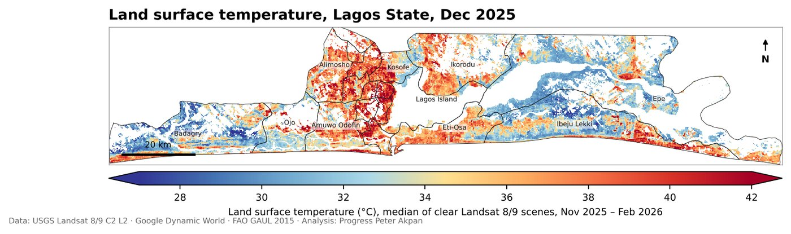
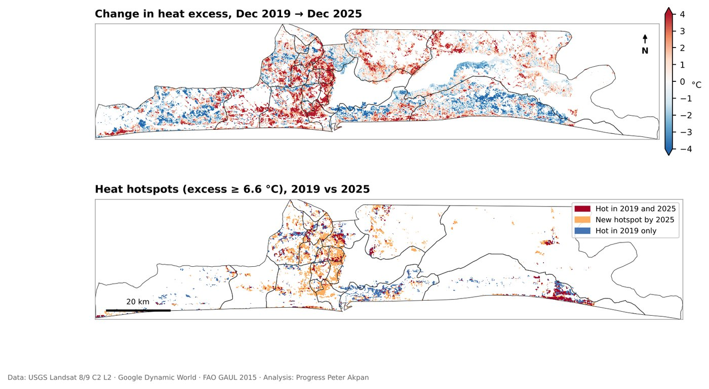
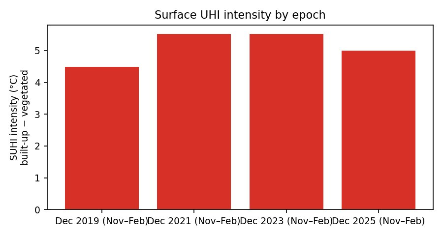
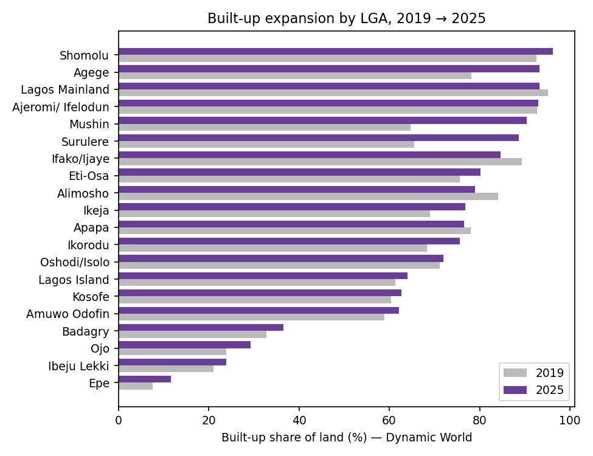
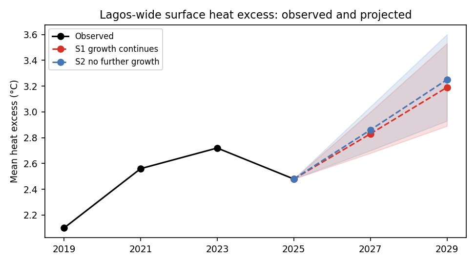
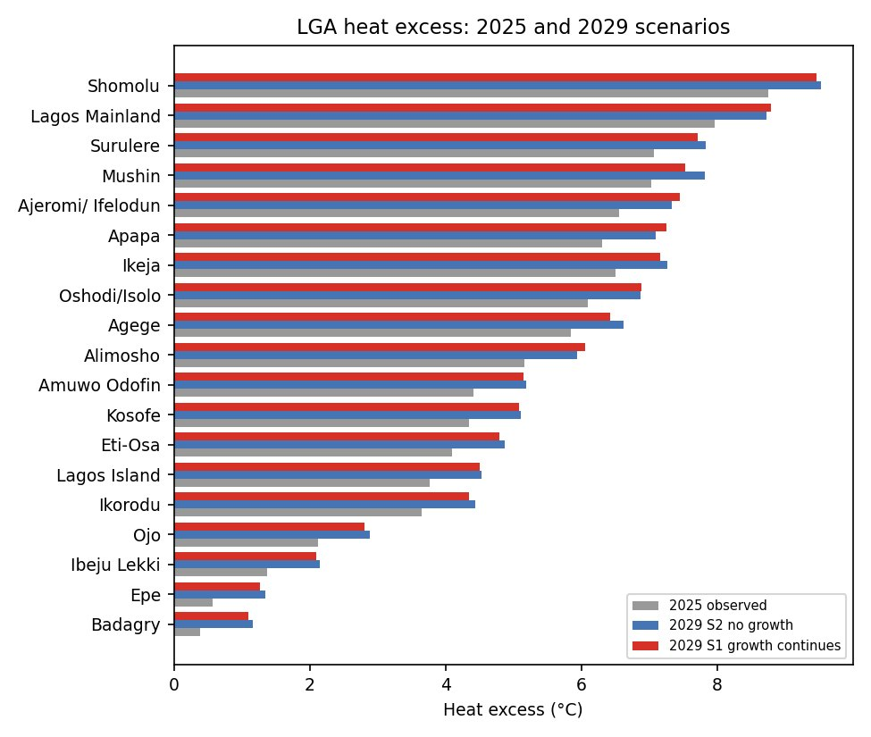
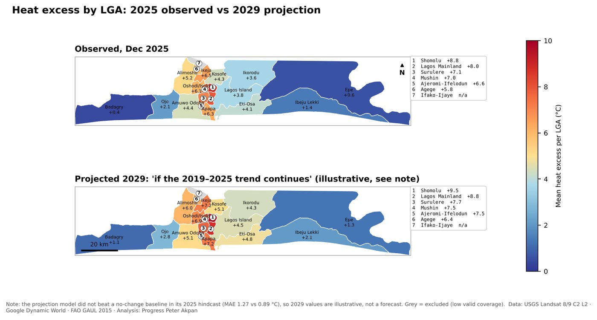

Overview
This project measures how the surface urban heat island (SUHI) of Lagos State has changed every two years. Four observed epochs (Dec 2019, 2021, 2023 and 2025) come from Landsat 8/9 land surface temperature (LST). The change is linked to built-up expansion mapped with Google Dynamic World, and heat is projected to 2027 and 2029 under two scenarios: built-up growth continuing at each LGA's observed rate, or no further growth. The analysis runs in Google Earth Engine (Python API), and the results are published as an interactive Leaflet web map.
Problem statement
Lagos is one of Africa's fastest-growing megacities. Wetlands, farmland and tree cover on its fringes (Lekki–Ibeju-Lekki, Ikorodu, Alimosho, the Badagry axis) are being converted to buildings and paved surfaces, which absorb and re-radiate more heat than vegetated ground. A single heat map shows where it is hot today. It cannot show whether the heat island is intensifying, which LGAs are warming fastest, or what continued expansion would mean by the end of the decade. Planners need that trend, and an honestly tested projection, to decide where to protect green space, plant trees or apply cool-surface measures.
Objectives
- Map December dry-season LST for Lagos State in 2019, 2021, 2023 and 2025 at 30 m.
- Measure SUHI intensity, LGA-level heat excess and hotspot area in each epoch, and the change in hotspots and built-up land from 2019 to 2025.
- Estimate how heat excess changes with built-up expansion and with time, and project 2027 and 2029 with uncertainty and a hindcast accuracy check.
- Publish the results as an open, interactive web map.
Study area
Lagos State, south-west Nigeria: about 3,577 km² across 20 Local Government Areas. The state runs from the dense urban core (Lagos Island, Lagos Mainland, Surulere, Mushin, Oshodi-Isolo, Ikeja) to fast-growing fringes (Eti-Osa, Ibeju-Lekki, Ikorodu, Alimosho) and largely rural Epe and Badagry, with extensive lagoons, mangroves and wetlands. The analysis covers about 2,450 km² of land, with water excluded.
Data & sources
| Dataset | Source | Date | Resolution | Format |
|---|---|---|---|---|
Landsat 8 C2 L2 (ST_B10, SR_B4/B5, QA_PIXEL) | USGS, via Earth Engine | Nov–Feb windows | 30 m (thermal 100 m native) | Image collection |
| Landsat 9 C2 L2 (same bands) | USGS, via Earth Engine | From early 2022 | 30 m (thermal 100 m native) | Image collection |
| Dynamic World V1 (annual mode) | Google / WRI, via Earth Engine | 2019, 2021, 2023, 2025 | 10 m | Image collection |
| FAO GAUL 2015, levels 1 & 2 | FAO, via Earth Engine | 2015 | Vector | Feature collection |
| Basemap | © OpenStreetMap contributors, © CARTO | Current | Tiles | XYZ |
| Epoch | Imagery window (December-centred dry season) | Status |
|---|---|---|
| 2019 | 1 Nov 2019 – 29 Feb 2020 | Observed (baseline) |
| 2021 | 1 Nov 2021 – 28 Feb 2022 | Observed |
| 2023 | 1 Nov 2023 – 29 Feb 2024 | Observed |
| 2025 | 1 Nov 2025 – 28 Feb 2026 | Observed |
| 2027, 2029 | n/a | Projected |
Methodology
- LST:
LST(°C) = ST_B10 × 0.00341802 + 149.0 − 273.15. Collection 2 Level-2 already includes atmospheric and emissivity correction. - Masking and compositing: pixels flagged in
QA_PIXELbits 0–4 (fill, dilated cloud, cirrus, cloud, shadow) are removed, as are values outside 10–70 °C. Scenes with 40% or more cloud cover are excluded, and pixels need at least 3 clear observations. A per-pixel median is taken for each epoch, and water is masked with a fixed land mask. - Zones: Dynamic World annual mode gives built-up land (class 6) and a vegetated reference (trees, grass, crops, shrub). Flooded vegetation is excluded from the reference.
- Heat excess = LST minus the mean LST of vegetated land in the same epoch. Both terms come from the same images, so year-to-year weather largely cancels and epochs become comparable. SUHI intensity is the heat excess of all built-up land.
- Hotspots: heat excess at or above the 2019 90th percentile (6.62 °C). The threshold is fixed, so hotspot area is comparable across years.
- Model: an LGA × year panel with LGA fixed effects:
heat_excess = αLGA + β·built_share + γ·year. β captures the effect of expansion; γ captures background drift. - Scenarios from each LGA's 2025 level: S1 lets built-up land keep growing at its 2019–2025 rate; S2 freezes it at 2025.
- Uncertainty: 95% intervals from 2,000 cluster-bootstrap draws over LGAs.
- Validation: a hindcast fits the model on 2019–2023, predicts 2025, and compares the result with a naive "no change" baseline.
Results
All values come from a single run of the Earth Engine notebook on 8 November 2026.
| Metric | Dec 2019 | Dec 2021 | Dec 2023 | Dec 2025 |
|---|---|---|---|---|
| Landsat scenes (L8 + L9) | 20 + 0 | 20 + 16 | 17 + 20 | 14 + 16 |
| Valid land coverage | 83.9% | 96.9% | 97.2% | 84.0% |
| Built-up mean LST | 36.43 °C | 37.14 °C | 37.47 °C | 37.04 °C |
| Vegetated mean LST | 31.94 °C | 31.62 °C | 31.94 °C | 32.04 °C |
| SUHI intensity | +4.49 °C | +5.52 °C | +5.53 °C | +5.00 °C |
| Hotspot area | 200.6 km² | 456.6 km² | 456.5 km² | 295.5 km² |
| Lagos-wide mean heat excess (19 LGAs) | 2.10 °C | 2.56 °C | 2.72 °C | 2.48 °C |
Where the heat is

| Hottest LGAs, Dec 2025 | Heat excess | Largest rise, 2019 → 2025 | Change |
|---|---|---|---|
| Shomolu | +8.75 °C | Lagos Mainland | +3.69 °C |
| Lagos Mainland | +7.96 °C | Shomolu | +3.33 °C |
| Surulere | +7.06 °C | Apapa | +2.34 °C |
| Mushin | +7.03 °C | Oshodi-Isolo | +1.82 °C |
| Ajeromi-Ifelodun | +6.56 °C | Surulere | +1.57 °C |
The coolest LGAs in Dec 2025 were Badagry (+0.39 °C), Epe (+0.57 °C) and Ibeju-Lekki (+1.37 °C).
What changed



Projection to 2027 and 2029
| Model / projection | Value |
|---|---|
| β: heat excess per +10 percentage points of built-up share | −0.29 °C [95% CI −0.58, +0.01], not distinguishable from zero |
| γ: background drift | +0.19 °C/yr [95% CI +0.11, +0.28] |
| Hindcast: fit 2019–2023, predict 2025 (MAE, 19 LGAs) | Model 1.27 °C vs. no-change baseline 0.89 °C |
| Lagos-wide heat excess 2027 (S1 / S2) | 2.83 [2.68, 3.00] / 2.86 [2.70, 3.04] °C |
| Lagos-wide heat excess 2029 (S1 / S2) | 3.19 [2.89, 3.53] / 3.25 [2.93, 3.60] °C |
The projection failed its own test. Asked to predict 2025 from 2019–2023, the model did worse than simply assuming no change. The 2027 and 2029 values are therefore shown as an illustrative "if the 2019–2025 drift continues" extrapolation, not as a forecast.



Interactive map
Switch between years, toggle temperature or heat excess, and overlay hotspot change and new built-up land. Click an LGA for its statistics and projections.
Open the map full screen →Interpretation
- Lagos has a strong, persistent surface heat island. Built-up land was 4.5–5.5 °C hotter than vegetated land in every December.
- The heat is concentrated in the dense mainland core. Shomolu, Lagos Mainland, Surulere, Mushin and Ajeromi-Ifelodun sit 6.5–8.8 °C above vegetated land. Epe, Ibeju-Lekki and Badagry stay within about 1.5 °C.
- Heat rose sharply from 2019 to 2021, held through 2023, then eased in 2025. 2019 and 2025 had lower image coverage (84% vs. 97%), and 2019 used Landsat 8 only, so part of these steps may reflect image availability rather than surface change.
- Densification, not sprawl. LGA-level built-up share does not explain the warming (β ≈ 0). The LGAs that warmed most were already more than 75% built-up in 2019, which points to change inside the existing urban fabric.
- An honest negative result. The trend model did not beat a no-change baseline, so the projections are illustrative. Testing building-density data such as Google Open Buildings, in place of land-cover classes, is the natural next step.
Limitations
- Surface, not air, temperature: measured at about 10:30 local time. Night-time heat retention isn't captured.
- Uneven sensors and coverage: 2019 is Landsat 8 only; 2019 and 2025 have about 84% valid coverage against about 97% for 2021 and 2023. Ifako-Ijaye was excluded from the model in 2025.
- Bright sand: the ocean beach and dredged sand-fill sites (e.g. along the Lekki coast) read hot without being urban.
- Harmattan haze can bias some December–February scenes.
- Dynamic World label noise between years, especially on construction sites.
- Resolution and boundaries: thermal data is 100 m native, and GAUL 2015 LGA boundaries are approximate.
- Projections are illustrative: they can be properly tested once Dec 2027 imagery exists (after Feb 2028).
Technologies
Google Earth Engine (Python API) · Python (NumPy, Matplotlib) · Google Colab · Landsat 8/9 · Dynamic World · Leaflet 1.9.4 · Chart.js 4.4.1 · HTML/CSS/JavaScript
Reproducibility
- Download the Earth Engine notebook and open it in Google Colab.
- Set
EE_PROJECTto your own non-commercial Earth Engine Cloud project ID. - Run all cells (about 10–20 minutes). The notebook writes the web-map data, figures and
uhi_outputs.zip. - Rebuild the static maps with make_maps.py.
- Check the projection model without Earth Engine using test_model_synthetic.py, which runs on a clearly labelled synthetic panel with known coefficients.
The full repository will be published on GitHub; until then, the code files are downloadable from this page.